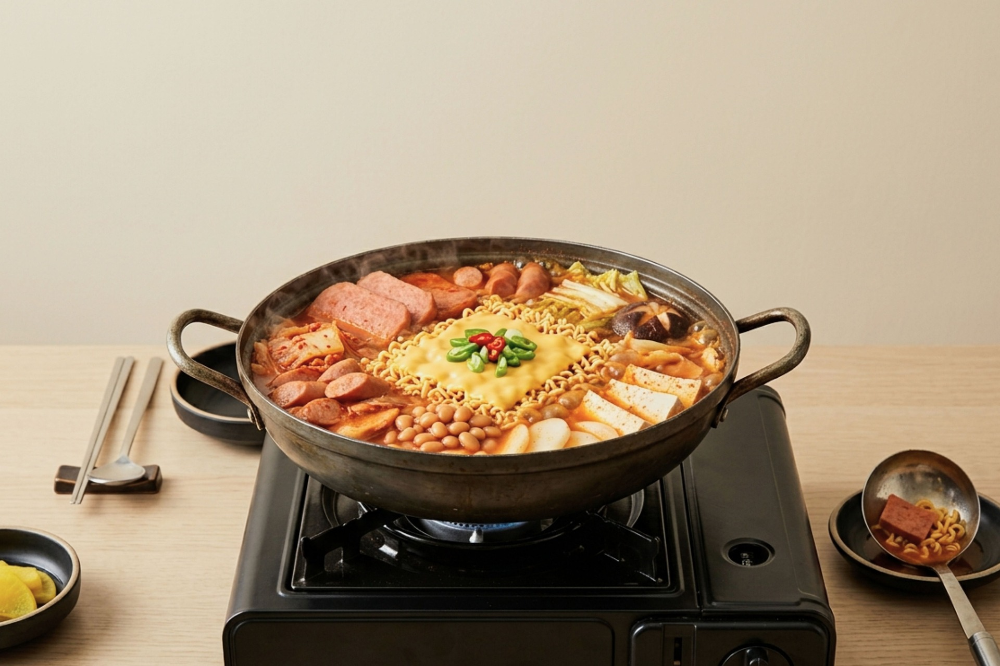
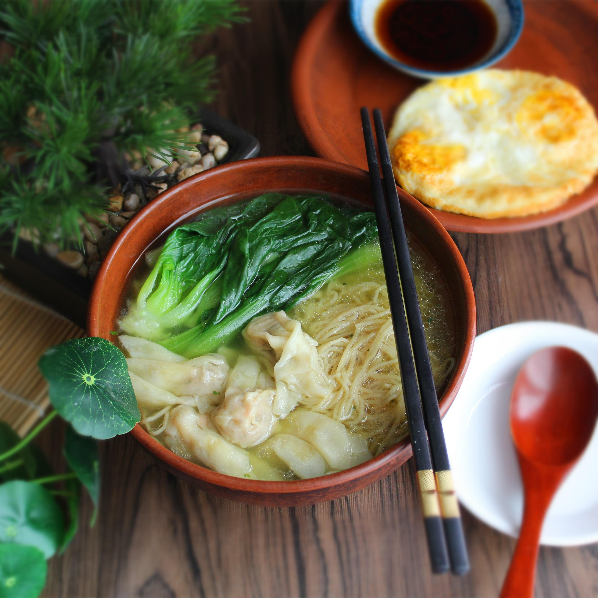

Intro
This page is dedicated to sharing a collection of my favorite recipes, ranging from quick and easy meals to more elaborate dishes. Whether you're a seasoned cook or just starting out, you'll find something here to inspire your culinary adventures. Each recipe includes detailed instructions, ingredient lists, and tips to help you achieve the best results in your kitchen.
Kimchi Jjigae (Korean Kimchi Stew)

Kimchi Jjigae is a spicy Korean stew made with fermented kimchi, pork, and various vegetables. It is typically served with rice and is known for its bold, umami flavors. The stew can be adjusted to suit different spice levels and is a popular comfort food in Korean cuisine.
#Korean style #spicy
Ingredients:
tofu, pork belly, kimchi, garlic, green onions, gochugaru (Korean red pepper flakes), soy sauce, sesame oil, water or broth
Instructions:
1. In a pot, sauté garlic and pork belly until the meat is browned.
2. Add kimchi and cook for a few minutes.
3. Pour in water or broth and bring to a boil.
4. Add tofu and simmer for 15-20 minutes.
5. Season with soy sauce, gochugaru, and sesame oil to taste.
6. Garnish with green onions before serving.
Serving suggestion:
Serve hot with steamed rice or alongside with instant ramen.
Crack an egg into the stew during the last few minutes of cooking if you like a richer broth.
Hong Kong Style French Toast
Hong Kong-style French toast is a popular breakfast and snack item in Hong Kong. It consists of two slices of bread, often filled with peanut butter or kaya sause, dipped in egg batter, and deep-fried until golden brown. It is typically served with a block of butter and syrup or condensed milk on top.
#Hong Kong style #sweet #snack
Ingredients:
bread slices, eggs, milk, sugar, butter, peanut butter or kaya sause (for filling), syrup or condensed milk (for serving)
Instructions:
1. Spread peanut butter or kaya sause between two slices of bread to make a sandwich.
2. In a bowl, whisk together eggs, milk, and sugar.
3. Heat oil in a pan for deep frying.
4. Dip the sandwich into the egg mixture, ensuring it is fully coated.
5. Fry the sandwich in hot oil until golden brown on both sides.
6. Remove from oil and drain on paper towels.
7. Serve with butter and syrup or condensed milk drizzled on top.
Serving suggestion:
Enjoy as a breakfast treat or an afternoon snack with a cup of milk tea.
Hong Kong Style Wonton

Hong Kong-style wonton is a type of dumpling that is commonly served in a clear broth. The wontons are typically filled with a mixture of shrimp and pork, and the broth is often flavored with soy sauce, sesame oil, and green onions. Wontons can also be served with egg noodles with a branched of bok choi.
#Hong Kong style #dumpling #soup
Ingredients:
wonton wrappers, shrimp, ground pork, garlic, ginger, soy sauce, sesame oil, green onions, chicken or pork broth
Instructions:
1. In a bowl, combine chopped shrimp, ground pork, minced garlic, grated ginger, soy sauce, and sesame oil to make the filling.
2. Place a small amount of filling in the center of each wonton wrapper.
3. Fold the wrapper over the filling and seal the edges with water.
4. Boil the wonton using hot water for few minutes.
5. Bring a pot of chicken or pork broth to a boil.
6. Add the wontons to the boiling broth
7. Garnish with chopped green onions before serving.
Serving suggestion:
Serve hot as a soup or with noodles for a complete meal.